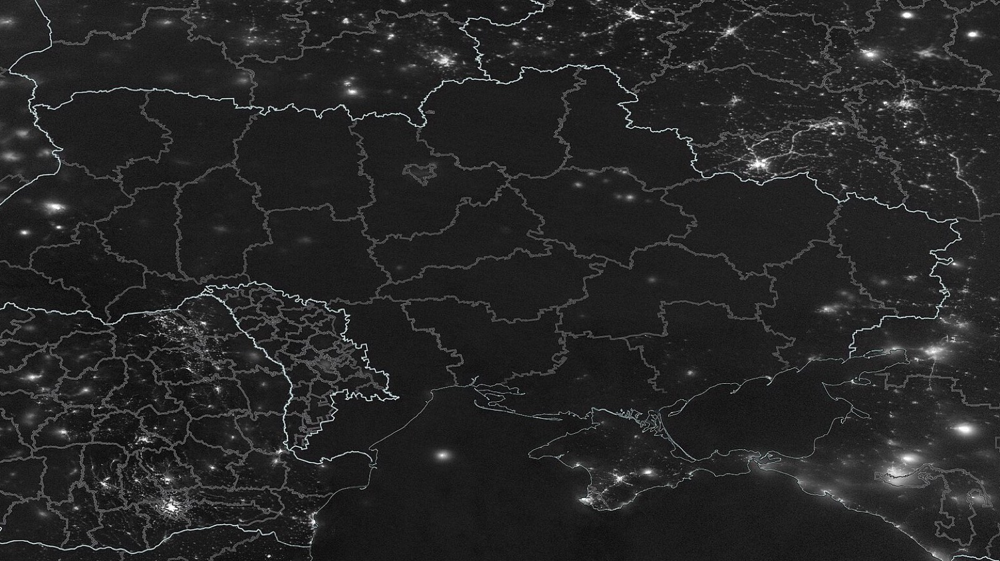
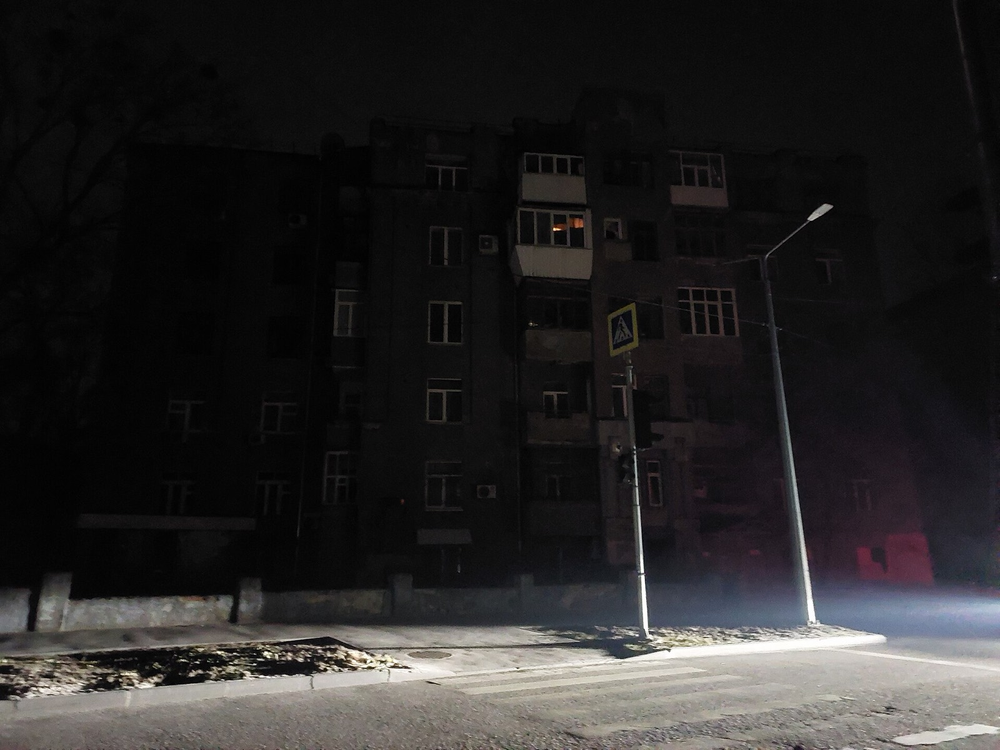
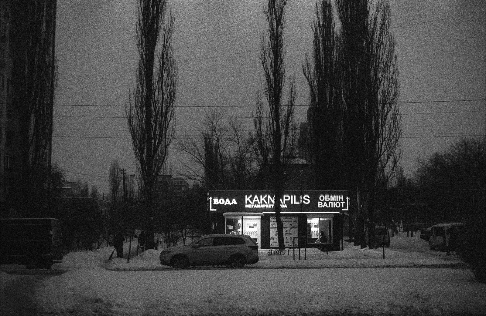
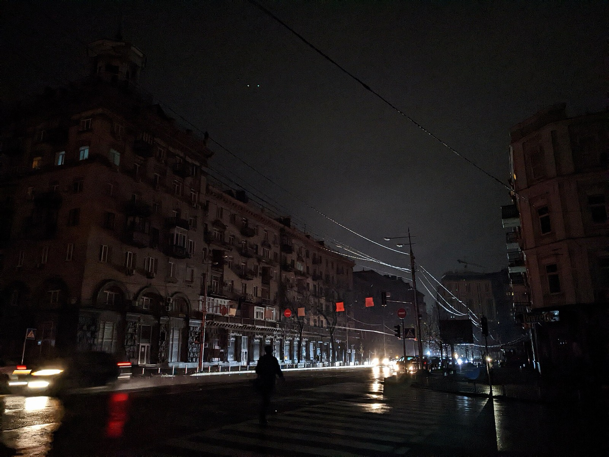

Україна вночі
Кожен вогник — будинок однієї з черг. Він гасне, коли в черги немає світла.
Завантажую графіки…
- світло є
- немає за графіком
- можливе відключення
- немає даних
--:--
Частка черг без світла протягом доби по всіх областях з даними.

24 листопада 2022
Наступного дня після масованого удару по енергосистемі Україна майже зникла з нічних знімків із космосу. Відтоді графіки відключень стали частиною життя, а кожне обленерго публікує їх по-своєму: таблицею, текстом, картинкою.
Цей сайт збирає їх в одне місце і щоп'ятнадцять хвилин оновлює.
Моя черга
Мої адреси

Коли світло є в усіх

Дім, офіс, батьки в іншому місті. Збережіть адреси вище, і тут з'являться години, коли світло є всюди: для дзвінка, прання чи зустрічі.
Скільки годин без світла
Області за останні 7 днів
Середня кількість годин без світла на добу на одну чергу.

Звідки дані
Графіки беруться напряму з сайтів обленерго кожні 15 хвилин. Обленерго може змінити графік будь-якої миті, тож перед важливими справами перевіряйте їхній сайт.
| Область | Обленерго | Стан | Графік оновлено |
|---|